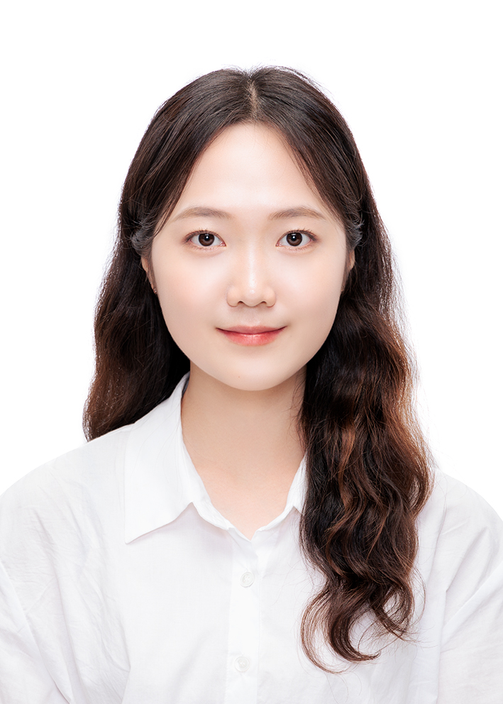

Sumin Yu
M.S./Ph.D. student
AI Safety
Fairness & Bias
Generative Models
Privacy
AI Governance
Accountability

Research Interests
- Ensuring safe and trustworthy AI, with a focus on algorithmic fairness, bias, harmful content in generative models, and privacy risks.
- AI governance and accountability for responsible and trustworthy AI.
Education
-
2023.03 – PresentM.S./Ph.D.
Dept. of Electrical and Computer Engineering, Seoul National University Advisor: Taesup Moon -
2019.03 – 2023.02B.S.
Dept. of Electrical and Computer Engineering, Seoul National University
GPA: 3.95/4.3
Publications
Do Counterfactually Fair Image Classifiers Satisfy Group Fairness? – A Theoretical and Empirical Study
Sangwon Jung*, Sumin Yu*, Sanghyuk Chun, Taesup Moon (* equal contribution)
Neural Information Processing Systems (NeurIPS), December 2024
Experience
-
2022.09 – 2023.08SNU Tomorrow’s Edge Membership (STEM), Honor Society
College of Engineering, SNU -
2022.09 – 2023.02Research Intern, M.IN.D Lab, Seoul National University
Supervised by Prof. Taesup Moon & Dr. Sangwon Jung -
2019.09 – 2020.08Student Society for Social Responsibility, SNU Social Responsibility
Member; President
Honors & Awards
-
2023.02SNU Summa Cum Laude
-
2019.03 – 2023.02Full scholarship, Cho Chang-seok Cultural Foundation